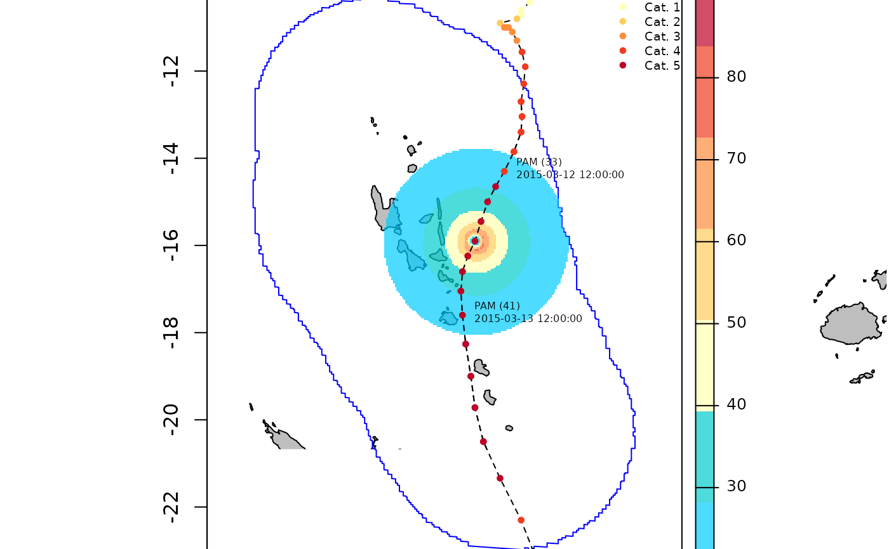
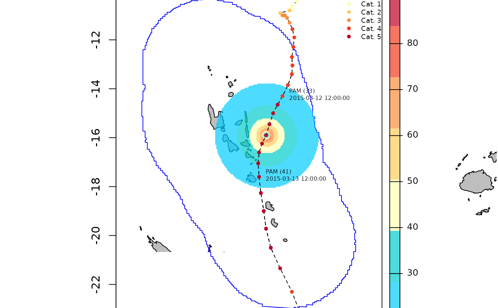

Plot rasterized information storm behaviour
plotBehaviour.RdThis function plots a rasterize product (Maximum Sustained Wind, Power Dissipation Index, Category Exposure, 2D wind speed structure at a given observation ...) associated with a storm contained in a Storms object alongside with its track
plotBehaviour(
sts,
raster_product,
xlim = NULL,
ylim = NULL,
labels = FALSE,
by = 8,
pos = 3,
color_palette = NULL
)Arguments
- sts
Storms object
- raster_product
Spatraster object. Name of the layer must be "stormName_product" where product is either MSW, PDI, or Exposure(1,2,3,4,5,All). It can also be "stormName_profileInd" where Ind stand for the observations if raster_product is a 2D wind speed structure
- xlim
numeric vector. A set of longitude coordinates that controls the longitude extent of the plot. Default value is set to NULL which will let the plot extends according to the x bounding box of spatial.loi.buffer
- ylim
numeric vector. A set of latitude coordinates that controls the latitude extent of the plot. Default value is set to NULL which will let the plot extends according to the y bounding box of spatial.loi.buffer
- labels
logical. Whether or not to plot ISO Times and name labels
- by
numeric. Defines the frequency at which labels are plotted for the 3-hourly records. Default value is set to 8 which represents a 24h time interval between each labeled observations. Ignored if labels == FALSE
- pos
numeric. Must be between 1 and 4. Correspond to the position of labels according to the observation: 1 (up), 2 (left), 3 (down), 4 (right). Default value is set to 3
- color_palette
character vector. Represents the color palette used for the plot. Default value is set to NULL, which will automatically choose a color palette depending on the product of raster_product
Examples
#Plot MSW analytic raster for PAM 2015 in Vanuatu
pam_msw <- terra::rast(system.file("extdata", "PAM_MSW.tiff",package = "StormR"))
plotBehaviour(pam, pam_msw)
 #Plot PDI analytic raster for ERICA 2003 in New Caledonia
erica_pdi <- terra::rast(system.file("extdata", "ERICA_PDI.tiff",package = "StormR"))
plotBehaviour(sts_nc, erica_pdi)

#Plot PDI analytic raster for NIRAN 2021 in New Caledonia
niran_pdi <- terra::rast(system.file("extdata", "NIRAN_PDI.tiff",
package = "StormR"))
plotBehaviour(sts_nc, niran_pdi)
#Plot PDI analytic raster for ERICA 2003 in New Caledonia
erica_pdi <- terra::rast(system.file("extdata", "ERICA_PDI.tiff",package = "StormR"))
plotBehaviour(sts_nc, erica_pdi)

#Plot PDI analytic raster for NIRAN 2021 in New Caledonia
niran_pdi <- terra::rast(system.file("extdata", "NIRAN_PDI.tiff",
package = "StormR"))
plotBehaviour(sts_nc, niran_pdi)
 #Plot 2D wind speed structure for ERICA 2003 at observation 93
erica_profile78 <- terra::rast(system.file("extdata", "ERICA_profile78.tiff", package = "StormR"))
plotBehaviour(sts_nc, erica_profile78, labels = TRUE)
#Plot 2D wind speed structure for ERICA 2003 at observation 93
erica_profile78 <- terra::rast(system.file("extdata", "ERICA_profile78.tiff", package = "StormR"))
plotBehaviour(sts_nc, erica_profile78, labels = TRUE)